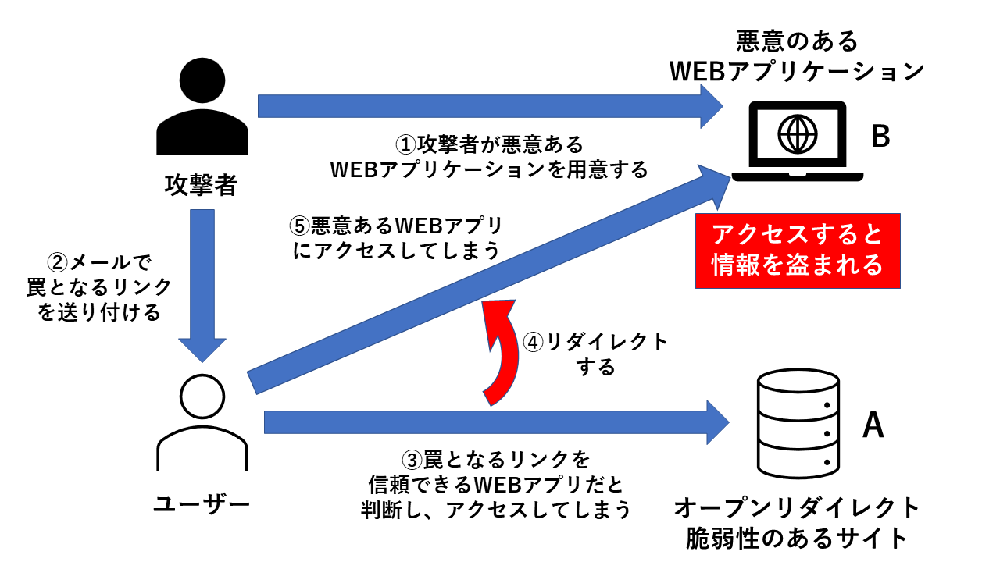

オープンリダイレクト攻撃とは、webブラウザであるサイトを入力したときに、
他のサイトへ自動的に移動するリダイレクトという機能を悪用した攻撃のことです。
フィッシング詐欺などに悪用されます。

①攻撃者はまず、オープンリダイレクト脆弱性のあるサイト（A）を探し出します。
その後、アクセスすると情報が盗まれるような
悪意のあるアプリケーション（Ｂ）を用意します。
②Ａのオープンリダイレクト脆弱性を利用して、
強制的にＢにリダイレクトするような、
罠となるリンクを作成します。
そのリンクを、普段Ａを利用しているユーザーにメールで送り付けます。
③ユーザーはそのリンクを信頼できるＷＥＢアプリケーションだと判断し、
アクセスされてしまいます。
④ユーザーは強制的にリダイレクトされます。
⑤④のリダイレクトにより、ユーザーはＢにアクセスしてしまい。
情報を盗まれてしまいます。
以下のリンクがリダイレクト機能を悪用したものになります。
アクセス後にURLを確認してもらえれば、
url変数に罠サイトへのリンクが代入されていることがわかります。
この変数はリダイレクト機能に使われるものであるため、
ログインが成功したらそのリンクへと遷移させることができます。
このリンクにアクセスすることが図の③にあたります。
これがオープンリダイレクト攻撃です。
それでは、以下のリンクにアクセスしてオープンリダイレクト攻撃を
体験してみてください。
オープンリダイレクトテスト